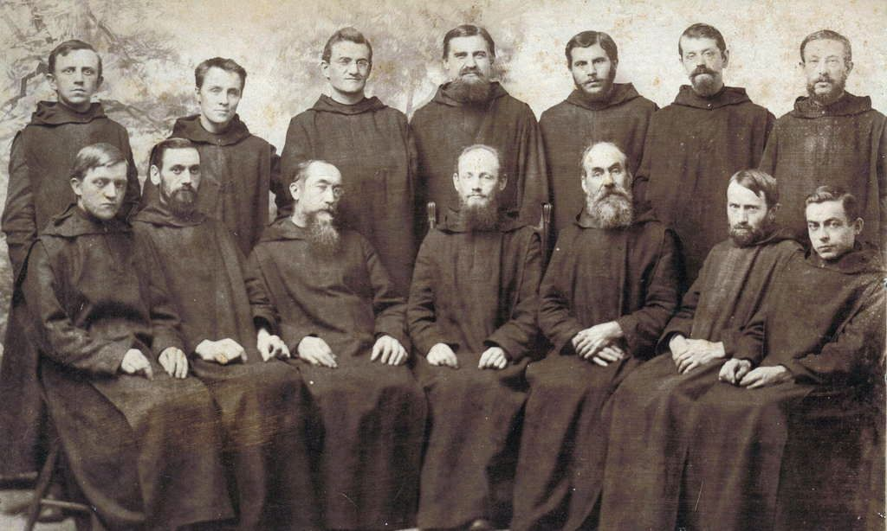
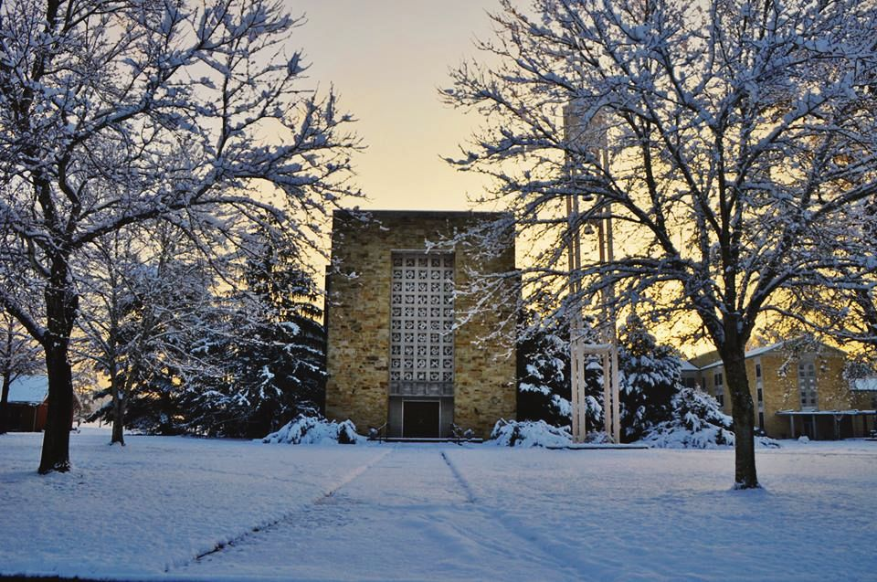

Our history
A history in dates
From a Bavarian abbey to a hill in north Alabama: St. Bernard's story, from the Necrology, the archives and the abbey's own news.
1846–1891
Roots
- 1846Boniface Wimmer, a monk of Metten Abbey in Bavaria, founds St. Vincent in Latrobe, Pennsylvania, the first Benedictine monastery in the United States.
- 1870sMonks from St. Vincent come to north Alabama to serve the German settlers around Cullman. Their first mission is St. Michael's, St. Florian.
- 1878Yellow fever strikes Huntsville. Fr. Benedict Menges, the future first abbot, stays with the sick and dying when everyone who can has fled.
- 1880sFr. Gamelbert Brunner, pastor in Cullman, promises eighty acres of land, and the monks settle on a hill of virgin forest a mile and a half east of town.
1891–1904
The founding
- 29 Sept 1891St. Bernard becomes an abbey. After a Pontifical Mass the monks elect Fr. Benedict Menges first abbot, unanimously, on the first ballot; the bells ring the news to Cullman and a brass band plays for him that night.
- 29 Jan 1892Abbot Benedict is blessed in Cullman. The same day, in Hamburg, Fr. Gamelbert sails with seven young Bavarians bound for St. Bernard.
- 18 Sept 1892St. Bernard College opens its first session: 59 boys in grades 6 to 12. The state charters it the next year.
- 1895At the third commencement the students perform an original drama, the start of a long tradition. Fr. Urban Tracy volunteers as chaplain to the leper colony in Louisiana.
1904–1938
Building
- 20 July 1904Abbot Benedict has died; his nephew Bernard Menges, the first monk professed at St. Bernard, is elected second abbot.
- 1911The new powerhouse brings electricity; Br. Joseph Zoettl will spend some thirty years at its boilers.
- 1914The carpenter shop under Br. Gerard Staudinger turns out 250 oak chairs and 300 desks in a single year.
- 1918The influenza epidemic: Frater Hubert Carney, nursing the sick, makes his solemn vows on his deathbed on 13 October and dies the same day.
- 1919Fr. Stephen Radtke founds the school newspaper, The White and Blue.
- 1926Fr. Stephen coaches the great undefeated football team.
- 1929St. Bernard begins a junior college (accredited 1932). Fr. Andrew Capesius becomes the abbey's first doctor of philosophy, and Fr. Patrick O'Neill wins the Carnegie Medal for thwarting a prison riot in Colorado.
- 1933Abbot Bernard dies after twenty-nine years; the missionary Ambrose Reger is elected third abbot.
- 17 May 1934The Ave Maria Grotto is dedicated in the old quarry.
1939–1964
The college years
- 4 Jan 1939Fr. Boniface Seng is elected fourth abbot.
- 1939Ernie Pyle, America's best-known roving columnist, writes about the Grotto.
- 1941Br. Wolfgang Wolf, the tailor turned botanist, publishes two new Alabama species; monks serve as chaplains through the Second World War.
- 1947Abbot Boniface's golden jubilee: Samuel Cardinal Stritch of Chicago preaches the sermon.
- 1952Fr. Bede Luibel is elected coadjutor abbot.
- 1955The first graduates of the four-year college (accredited 1956). The abbey's Guernsey dairy herd is among the best in the state.
- 1957Abbot Bede begins the building campaign: Boniface Hall, the dining hall, the monastery and the Abbey Church.
- 1958Br. Joseph finishes his last miniature, the Basilica of Lourdes, at eighty.
- 1961Br. Joseph Zoettl dies on 15 October. Coach Charley Richard's basketball team plays in the national NAIA tournament in Kansas City.
- 1962The high-school program closes so the college can grow.
- 1963The present monastery is built.
- 1964The Abbey Church of native sandstone, with statues by Herbert Jogerst, is finished. Abbot Bede resigns.
1964–1984
Change and renewal
- 1967Fr. Gregory Roettger, who had come as apostolic administrator in a time of difficulty, is elected sixth abbot.
- 1969St. Bernard College becomes fully coeducational.
- 1972Fr. Hilary Dreaper is elected seventh abbot.
- 1976St. Bernard College and Cullman College, run by the Benedictine Sisters of Sacred Heart Monastery, merge as Southern Benedictine College.
- 1979The college closes. Abbot Hilary turns a former dormitory, Boniface Hall, into a retreat and conference center (opened 1981).
- 1982Abbot Hilary with Mother Angelica, whose network, EWTN, had begun the year before in nearby Irondale.
- 1984St. Bernard Preparatory School reopens as a coeducational boarding and day school. The Ave Maria Grotto is listed on the National Register of Historic Places, 19 January.
1984–2009
The Prep and the Grotto
- 1987Abbot Hilary resigns; Fr. Victor Clark is elected eighth abbot.
- 1988Tornadoes devastate Cullman and damage the campus; Abbot Victor restores the Administration Building to its historic appearance.
- 1995Fr. Cletus Meagher is elected ninth abbot on 8 May.
- 2007The middle school opens: grades 7 and 8 return to St. Bernard, as in the days of the old Minims.
2010–2026
Our own days
- 2013Red Clay Pictures' documentary Brother Joseph and the Grotto premieres at the abbey on 24 October.
- 2014The monks reopen the abbey farm; its first calf is born in December. Fr. Dominic Lee and Fr. Paschal Pautler enter the novitiate.
- 2016The 125th anniversary, with campus history tours. In Rome, Abbot Cletus greets Pope Francis at the Congress of Abbots on 8 September.
- 2018Solemn vows of Fr. Dominic, Fr. Paschal and Fr. Pachomius, 6 August.
- 2019Abbot Cletus retires; Fr. Marcus Voss is elected tenth abbot on 24 July. Fr. Edward Markley dies in January.
- 2020During the pandemic the church is closed to visitors and the monks' Sunday Mass goes out by livestream; Br. Andrew makes his vows in an empty church.
- 2023Fr. Paschal and Fr. Pachomius are ordained priests on 10 June.
- 2024Abbot Victor dies in January. The Great Cross is taken down, restored and raised again over the altar. St. Bernard unveils its new emblem in November.
- 2025Br. Jude Johnston, the last lay brother, dies on 19 June. The renovated monastery is dedicated on 27 June. Abbot Marcus resigns in October.
- 2026Br. Damien and Br. Raphael make first vows and three novices are clothed on 21 March. On 29 July the bells announce the election of Brendan Seipel as eleventh abbot. Fr. Bede Marcy becomes prior and Fr. Dominic Lee subprior. Abbot Brendan is ordained deacon on 20 October; his abbatial blessing is set for 21 November.

Sources: the Necrology of St. Bernard Abbey; the abbey archives' history of St. Bernard College and Prep; the abbey's Facebook page (2010–2026); the Encyclopedia of Alabama; the National Register of Historic Places. Dates are as these sources give them; where they differ, the abbey's own records are followed.